Next: Experiments Up: Use of the Estimated Previous: TDOA Modeling and Features Contents
As seen in equations 5.21 and 5.20, in order to
combine the acoustic and TDOA features one needs to determine an
optimum set of weights  that define how relevant each one
is. Without an automatic way to determine such value it needs to
be found using development data and performing a sweep of the
that define how relevant each one
is. Without an automatic way to determine such value it needs to
be found using development data and performing a sweep of the
 parameters optimizing the Diarization Error Rate (DER)
score. This constitutes a problem of robustness due to the
possible big differences between the development and test sets in
terms of the relative importance between features. It also becomes
a tedious job if the number of parallel feature streams is big.
Some of the factors that reduce the ability of a feature set to
optimally represent the speakers in a recording (and therefore its
relevance should be reduced) are:
parameters optimizing the Diarization Error Rate (DER)
score. This constitutes a problem of robustness due to the
possible big differences between the development and test sets in
terms of the relative importance between features. It also becomes
a tedious job if the number of parallel feature streams is big.
Some of the factors that reduce the ability of a feature set to
optimally represent the speakers in a recording (and therefore its
relevance should be reduced) are:
When setting the values by hand they are normally defined for all meetings equally and therefore they do not account for peculiarities due to the meeting room (noisier rooms) or to the nature of the meetings (kind of usual attendees or wether they move from their seats). The automatic weight setting algorithm presented here is able to compute the optimum values for each meeting independently.
Prior art in weights selection for features fusion needs to be searched for in areas other than speaker diarization, like in speaker verification and biometric fusion techniques (Fiérrez-Aguilar et al. (2003), Ross et al. (2001), Verlinde et al. (2000)) and in speech recognition (Misra et al. (2003), Ikbal et al. (2004), Li (2005)). Throughout the literature a well used technique for automatic weighting of different feature streams is based on the feature vectors entropy.
Initial tests were performed using the inverse entropy as relative weight to see how discriminant each feature stream was. This was done by obtaining the weights in a frame-basis via the inverse entropy of the posterior probabilities of the cluster models given the data. For MFCC, PLP and other acoustic features these entropies were comparable to each other and could therefore determine a correct relative weight between features, as shown in Misra et al. (2003). When using it with TDOA values their GMM models are such that low entropy values are obtained for almost every frame, regardless of how accurate the TDOA values can represent a real speaker position.
The proposed technique in this thesis uses the Bayesian Information Criterion (BIC) to compare how well each feature stream differentiates between clusters in order to determine an appropriate stream weighting. The BIC values are independent of the complexity and topology of the models being used and are a good indication of how close two clusters are.
Given the BIC values between all cluster pairs for the
acoustic and TDOA models, figure 5.12 shows the values
and their histograms for the meeting EDI_20050216-1051 from the
RT06s evaluation data set, computed for all pairs (given 22
initial clusters) for the first iteration of the clustering. The
TDOA values are much bigger in average and contain more positive
values than the acoustic values. If a weight 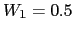 (equal
relevance) is considered, the TDOA BIC values would mask the
acoustics and decide which pair to merge, possibly leading to
errors as not all the information is considered. In order to allow
for different feature streams to contribute in equal conditions in
the merging decision it is needed to transform both BIC
value sets to have the same scale using the 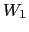 weight. This
way the TDOA values with overall high BIC are penalized
versus the acoustic values in order to be comparable to each
other. For a general case of M feature streams, the weight  assigned to each stream 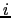 is defined as
assigned to each stream 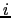 is defined as
| 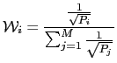 | (5.22) |
where 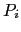 is computed from the N BIC values computed for all cluster pairs 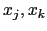 from each feature stream as
This process is equivalent to a variance normalization of single Gaussians modeling each feature stream with zero mean. Setting the mean to zero avoids moving the decision threshold in the BIC comparison, as defined by the BIC theory.
The automatic computation of the 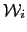 weight is performed at the first clustering step, when the BIC values are computed. At the initial segmentation step, no weight has been automatically defined and therefore some initial weight still needs to be determined by hand, or it can be set to an uninformative 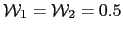.
On subsequent clustering iterations the models usually represent the clusters better and obtain BIC values which are more accurate. In order to allow the system to refine the weight as the merging iterations progress, the BIC values are kept for all cluster pairs that disappeared during previous iterations and existing pairs are recomputed. Then a new weight is computed taking into account both old and updated values in order to allow for a weight adaptation, containing enough samples for a robust computation.
| 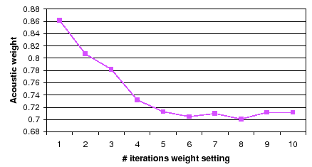 |
To illustrate the effect of the weight adaptation as the system
iterates, figure 5.13 shows the evolution of the
 weight over the initial 10 iterations of the algorithm for
meeting CMU_20050912-0900 (in the RT06s data set). It is common
on all meetings to start with bigger values for the acoustic part
and to see it reduced overtime and converging to a final value
(
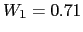 in this case, converging after 5 iterations). The
optimum weight always enhances the acoustic values versus the TDOA
values for all shows, both when computed automatically or
manually. By doing it automatically each show obtains its own
optimum value, which would had been set to 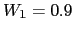 manually
for RT06s set (including this meeting).
weight over the initial 10 iterations of the algorithm for
meeting CMU_20050912-0900 (in the RT06s data set). It is common
on all meetings to start with bigger values for the acoustic part
and to see it reduced overtime and converging to a final value
(
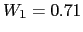 in this case, converging after 5 iterations). The
optimum weight always enhances the acoustic values versus the TDOA
values for all shows, both when computed automatically or
manually. By doing it automatically each show obtains its own
optimum value, which would had been set to 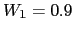 manually
for RT06s set (including this meeting).
In the experiments section the effect of the number of iterations in which the weight is computed versus the final DER score is computed. It is found that weights always converge to constant values with optimum DER values, therefore leading to a robust solution with one less tuning parameter.
user 2008-12-08